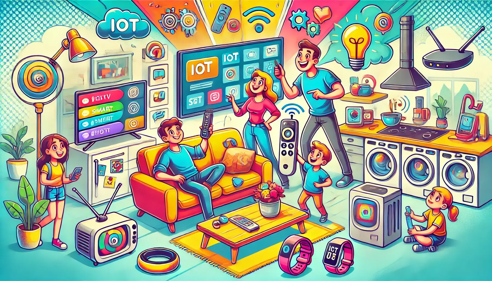

Introducción

Permíteme describirte un día hábil en mi trabajo.......
Hoy es un día hábil, en que debo acudir a mis actividades cotidianas, suena la alarma de mi celular a las 5:30 am con el tono star wars (ya debo cambiarlo, es muy retro 70´s), reviso mis mensajes, redes sociales (ups) y verifico la agenda del día en el asistente personal google/alexa/siri "de moda" basado en IA que mis hijos instalaron.
Mi jornada de trabajo inicia a las 7:00 am y termina a las 2:00 pm. La clase asignada de 11:00 am-12:00 pm será adelantada una hora pues mis alumnos me lo solicitan por mensaje whatsapp pues deben acudir al registro en línea del pre internado médico. Aprovechare entonces para enviar a los compañeros de mi academia de bioquímica médica la orden del día para la reunión extraordinaria con el enlace meet ya que 3 de ellos no pueden acudir a la hora programada.
El director me solicita el avance de capacitación de la sala virtual con accesos y registros de participación de los profesores de la facultad, en formato pdf, vía mensajería y correo electrónico (a esta hora ya recibí el mensaje de que nos fue depositado el salario con retroactividad, lo que me viene bien pues aprovecharé para realizar de inmediato el pago en línea de la tenencia vehicular, de la tarjeta bancaria y han sido aplicados los pagos domiciliados de servicios de cable, luz y agua).
Salgo de la oficina, subo al auto y escucho mi música favorita sincronizada por bluetooth mientras recibo en pantalla del auto confirmación que mi hermana acudirá a comer a casa y realizó pedido de un pastelito en aplicación uber. Ahhh, olvidaba que la reunión Zoom de evaluación vespertina de mi curso de actualización en Salud Pública, fue reprogramada pues el ponente asignado reporta fallas en la conexión desde su país. Afortunadamente regreso a casa satisfecho por mi jornada a disfrutar la reunión familiar, por la noche un poco de ejercicio , regaderazo y a disfrutar una nueva serie en streaming hasta dormir.
En el ejemplo anterior, ¿Cuántas veces consideras utilicé algún dispositivo electrónico o digital para complementar las actividades de mi jornada? Podría haber alcanzado los mismos resultados sin ellos? Realiza rápidamente una reflexión similar a la anterior en un día cualquiera de tu vida, eres usuario TICCAD?